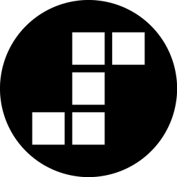

Step酱
你桌面上的阶跃娘
开口就能聊
全双工实时语音，不用按住、没有唤醒词
说完到首帧音频 235 ms
摸她、拖文件、看屏幕
头顶 / 脸颊 / 徽章反应各不相同
11 种表情 · 10 个动作
呼吸、眨眼、口型都是算出来的
常驻菜单栏
单个 .app，没有服务端
由阶跃星辰的模型驱动
stepaudio-3-realtime-preview
· stepaudio-3-asr-max · stepaudio-3-tts
step-5-preview
· step-3.7-flash · step-1o-turbo-vision
这个项目本身也是 AI 做出来的
—— 纯 AI coding 工作流 · 多 agent 协作开发 · 角色素材 AI 生成 · 语音全链路交给大模型
github.com/zampie/StepChan_Agent